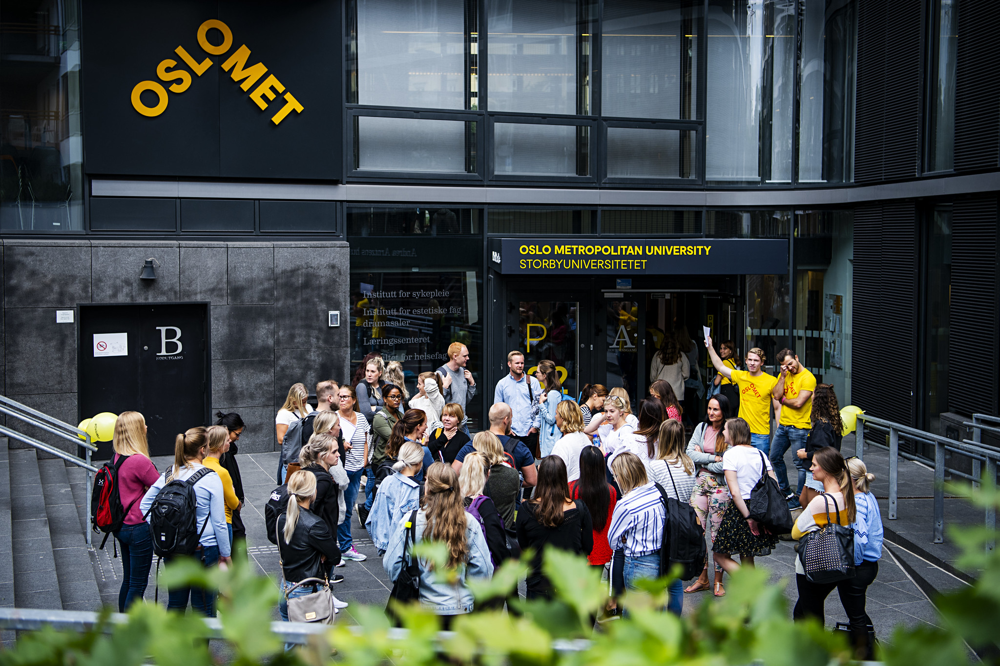
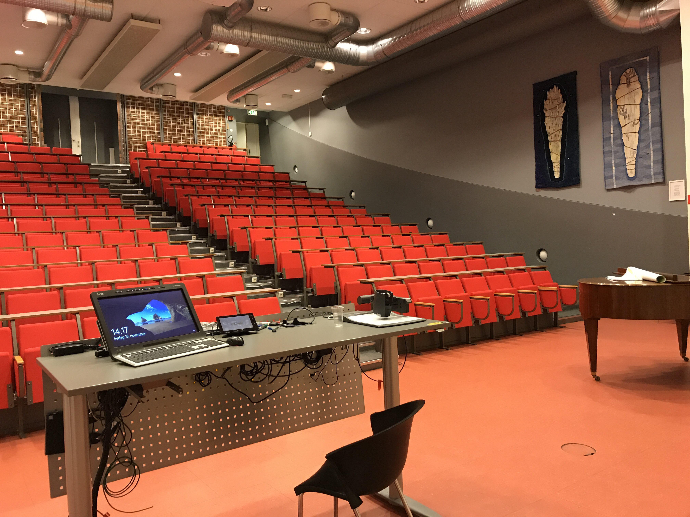

Being a student rather than a pupil
 Going from a pupil to a student has been a big challenge, both academically, socially and financially. At times, it can be quite confusing as no one really tells or guides you. You have to find out for yourself, which really sums up our main point.
There are big demands placed on us as students, and the most important thing is that you are responsible for your own learning. In contrast to upper secondary school, we received close follow-up from the teachers throughout the school year. As a student, it involves a lot of self-study and you are your own boss. Our responsibility applies to the work effort we put in the courses, making sure that you follow the course and stay updated on important information on the learning portal.
 When it comes to higher education, it is also challenging to relate to larger groups in different subjects and have a relatively small connection to the lecturer. The flow of information is also very different from high school. Firstly, there is no longer one contact teacher who is responsible for you. The teaching staff are first and foremost the lecturers and you meet an incredible number of students in one day. Therefore, they will to a small extent know the details around exactly your timetable and study. The teaching itself also often takes place in English, which makes it difficult to understand and keep up with.
This can also affect the motivation to study further, and once you do not understand any of the theory, it is even easier to lose motivation to read up, and gain an understanding of the subject. Once you are demotivated, you will also experience thoughts that the study may not be the right study, and many will also feel alone during the study. But these are normal reactions and thoughts for everyone.
There is much less teaching than what we are used to. There is very little teaching compared to upper secondary school. But that does not necessarily mean that the workload is smaller. In many subjects you often have to sit for several hours with a subject to be able to understand. And usually spends some more time reading through the large textbooks, taking notes, reviewing and expanding notes from lectures and calculating assignments. The theory is heavier and in general it is more challenging as a student in the study.
Higher education often costs money and for students it involves additional expenses, especially if you have moved away from home and live in a collective or dormitory. In addition, there are student loans and you are left with a large debt if you want to drop out, do not pass courses. Many students have challenges living on only scholarships, so most of them want to have a part-time job. But this can also affect the school, because you will be prioritizing work instead of school.
Nothing comes by itself, and the study period serves as an introduction to the areas of responsibility that adult independence comes with, academically, socially and financially. But at least you will get the dream job in the end which is the great benefit of taking a higher education.